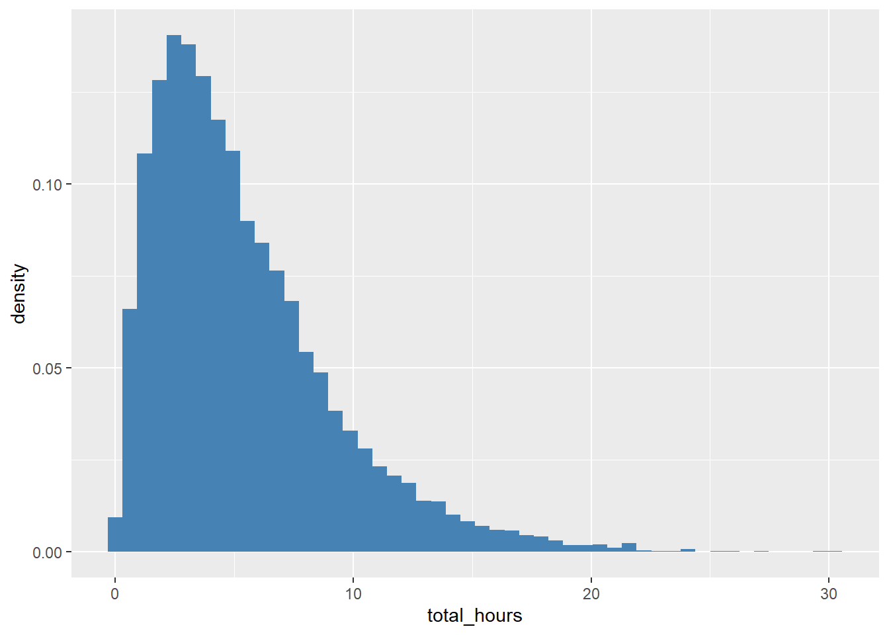
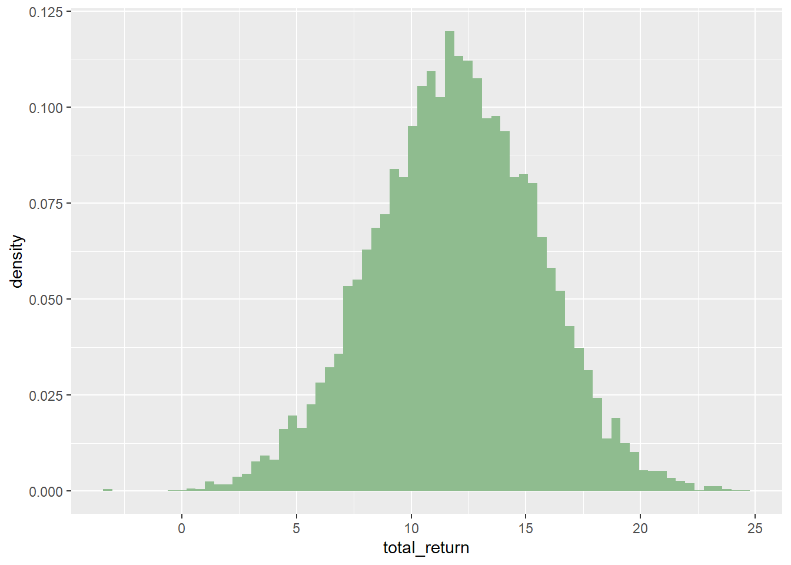
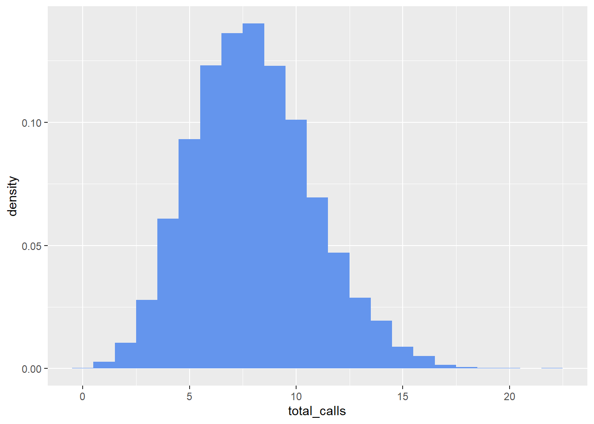

library(tidyverse)
library(ggplot2)
library(Matrix)
library(markovchain)DATA_605_Assignment_2_Fox
Preparation
Load libraries:
Problem 1
1. Bayesian
(Bayesian): A new credit scoring system has been developed to predict the likelihood of loan defaults. The system has a 90% sensitivity, meaning that it correctly identifies 90% of those who will default on their loans. It also has a 95% specificity, meaning that it correctly identifies 95% of those who will not default. The default rate among borrowers is 2%.
First I set up a confusion matrix: this is an extra step but it is helpful to visualize everything first.
n_borrowers = 10000
p_default = .02
sensitivity = .9
specificity = .95
n_default = n_borrowers %*% p_default
n_no_default = n_borrowers - n_default
M_default <- matrix(c(n_default %*% sensitivity, n_default %*% (1-sensitivity),n_default,
n_no_default %*% (1-specificity),n_no_default %*% specificity,n_no_default,
(n_default %*% sensitivity)+ (n_no_default %*% (1-specificity)),
(n_default %*% (1-sensitivity)) + (n_no_default %*% specificity),
n_default + n_no_default),
nrow = 3, byrow = TRUE)
rownames(M_default) = c("Default","No Default","Total")
colnames(M_default) = c("Risk Flag","No Risk Flag","Total")
M_default Risk Flag No Risk Flag Total
Default 180 20 200
No Default 490 9310 9800
Total 670 9330 10000Given these prevalence, sensitivity, and specificity estimates, what is the probability that a borrower flagged by the system as likely to default will actually default?
Using the matrix above, the probability of a flagged borrower defaulting (a true positive) is ~0.269.
tp <- M_default[1,1]
total_defaults <- M_default[3,1]
prob_tp <- tp/total_defaults
prob_tp[1] 0.2686567If the average loss per defaulted loan is $200,000 and the cost to run the credit scoring test on each borrower is $500, what is the total first-year cost for evaluating 10,000 borrowers?
If the model were used in a process to deny all flagged loans, the first-year cost would be $9 million: 20 false negatives would still get loans and default, at a cost of $4 million in addition to the $5 million cost of the tests.
options(scipen = 999) #no scientific notation
avg_cost <- 500
avg_loss <- 200000
# cost of tests for all borrowers
test_cost <- n_borrowers %*% avg_cost
test_cost [,1]
[1,] 5000000# deny all flagged loans: 20 false negatives still get loans and default
fn <- M_default[1,2]
total_cost <- test_cost + (avg_loss %*% fn)
total_cost [,1]
[1,] 90000002. Binomial
The probability that a stock will pay a dividend in any given quarter is 0.7.
Probabilities
The dbinom function in R gives the probability of an exact number of successes in a binomial distribution:
What is the probability that the stock pays dividends exactly 6 times in 8 quarters?
0.296
What is the probability that it pays dividends 6 or more times?
0.552
What is the probability that it pays dividends fewer than 6 times?
0.448
What is the expected number of dividend payments over 8 quarters?
The expected number of payments is simply n * p:
5.6
What is the standard deviation?
The standard deviation is \(\frac{np}{1-p}\):
1.296
n_binom <- 8
p_binom <- .7
# prob of 6
p_binom_6 <- dbinom(x = 6,
size = n_binom,
prob = p_binom)
p_binom_6[1] 0.2964755# prob of 6-8
p_binom_6_8 <- sum(dbinom(x = 6:8,
size = n_binom,
prob = p_binom))
p_binom_6_8[1] 0.5517738# prob of <6
p_binom_0_5 <- sum(dbinom(x = 0:5,
size = n_binom,
prob = p_binom))
p_binom_0_5[1] 0.4482262# expected
expected_binom <- n_binom %*% p_binom
expected_binom [,1]
[1,] 5.6# std dev
sd_binom <- sqrt(n_binom %*% p_binom * (1- p_binom))
sd_binom [,1]
[1,] 1.2961483. Poisson
A financial analyst notices that there are an average of 12 trading days each month when a certain stock’s price increases by more than 2%.
Probabilities
What is the probability that exactly 4 such days occur in a given month?
The dpois function in R gives the probability of an exact number of successes in a poisson distribution:
0.005
What is the probability that more than 12 such days occur in a given month?
Assuming there is no upper limit on the days (or trading days) in a month, we can use ppois function in R to find the probability of \(\leq 12\) and subtract that from 1:
0.424
How many such days would you expect in a 6-month period?
Expected = \(\lambda\) * number of months
72
What is the standard deviation of the number of such days?
Standard deviation = \(\sqrt \lambda\)
~3.464
If an investment strategy requires at least 70 days of such price increases in a year for profitability, what is the percent utilization and what are your recommendations?
The expected number of days with price increases over 2% in 12 months is 144, so the percent utilization is 205.7% and the probability of having 70 or more such days is 1.00. Therefore I would recommend moving forward with the investment strategy.
lambda_month <- 12
# prob of 4
prob_pois_4 <- dpois(x = 4,
lambda = lambda_month)
prob_pois_4[1] 0.005308599# prob >12, not limited to actual days in month
prob_pois_more_than_12 <- 1-(ppois(q = 12,
lambda = lambda_month))
prob_pois_more_than_12[1] 0.4240348# expected in six months
lambda_6months <- lambda_month %*% 6
lambda_6months [,1]
[1,] 72# std dev
sd_pois <- sqrt(lambda_month)
sd_pois[1] 3.464102# expected in 12 months
lambda_12months <- lambda_month %*% 12
lambda_12months [,1]
[1,] 144pct_util_12mo <- lambda_12months/70
pct_util_12mo [,1]
[1,] 2.057143prob_pois_more_than_69 <- 1-(ppois(q = 69,
lambda = lambda_12months))
prob_pois_more_than_69[1] 14. Hypergeometric
A hedge fund has a portfolio of 25 stocks, with 15 categorized as high-risk and 10 as low-risk.The fund manager randomly selects 7 stocks to closely monitor.
If the manager selected 5 high-risk stocks and 2 low-risk stocks, what is the probability of selecting exactly 5 high-risk stocks if the selection was random?
The hypergeometic distribution represents taking a sample without replacement where K is the total number of successes (in this case, high risk stocks) in the population N.
As in the examples above, we can use the “d” version of the distribution function, or dhyper, to find probabilities of exactly 5 successes in sample n=7:
0.281
How many high-risk and low-risk stocks would you expect to be selected?
The expected number of successes in sample n=7 is found by \(n \cdot \frac{K}{N}\):
4.2 high risk, 2.8 low risk
N_hyper <- 25 #total N
K_hyper <- 15 #total successes
n_hyper <- 7 #sample drawn
# prob of 5 successes in the sample
x_hyper <- 5 #desired successes
prob_hyper_5 <- dhyper(x_hyper,
K_hyper,
N_hyper-K_hyper,
n_hyper)
prob_hyper_5[1] 0.2811213# expected x
expected_hyper <- n_hyper %*% (K_hyper/N_hyper)
expected_hyper [,1]
[1,] 4.2# expected not x
n_hyper - expected_hyper [,1]
[1,] 2.85. Geometric
The probability that a bond defaults in any given year is 0.5%. A portfolio manager holds this bond for 10 years.
Probabilities
This is a geometric distribution modeling the number of trials (years) until the first success (default). As above we can use the “p” version of the distribution function or “pgeom” to find the probability of success in \(\leq q\) years:
What is the probability that the bond will default during this period?
0.489
What is the probability that it will default in the next 15 years?
0.072
What is the expected number of years before the bond defaults?
Expected = \(\frac{1}{p}\)
200
If the bond has already survived 10 years, what is the probability that it will default in the next 2 years?
Surviving 10 years is not relevant; find probability of defaulting in 2 years:
0.010
p_geom <- .005
# prob default by year 10
prob_geom_10 <- pgeom(9,p_geom) #up to 9 FAILURES (not 10 successes)
prob_geom_10[1] 0.04888987# prob default by year 15
prob_geom_15 <- pgeom(14,p_geom)
prob_geom_15[1] 0.07243103# expected years before default
exp_geom <- 1/p_geom
exp_geom[1] 200# prob default by year 2
prob_geom_2 <- pgeom(1,p_geom)
prob_geom_2[1] 0.0099756. Poisson
A high-frequency trading algorithm experiences a system failure about once every 1500 trading hours.
The time interval is 1500 hours and \(\lambda = 1\)
What is the probability that the algorithm will experience more than two failures in 1500 hours?
Similar to the earlier poisson problem, I used ppois to find the probability of \(\leq 2\) failures in one time interval and subtracted from 1 to find probability of >2:
0.080
What is the expected number of failures?
The expected number of failures in 1500 hours is lambda or 1
# time interval = 1500 hours
lambda_1500hours <- 1
# prob of >2 in one time interval
prob_pois2_gt2 <- 1-(ppois(q = 2,
lambda = lambda_1500hours))
prob_pois2_gt2[1] 0.0803014# expected in 1500 hours
exp_1500hrs <- lambda_1500hours %*% 1
exp_1500hrs [,1]
[1,] 17. Uniform
An investor is trying to time the market and is monitoring a stock that they believe has an equal chance of reaching a target price between 20 and 60 days.
Probabilities For a discrete uniform distribution, every outcome is equally likely so the probability formula is: \[P(a \leq X \leq b) = \frac{values\ in\ range}{total\ possible\ values} \]
What is the probability that the stock will reach the target price in more than 40 days?
0.488
If it hasn’t reached the target price by day 40, what is the probability that it will reach it in the next 10 days?
0.225
What is the expected time for the stock to reach the target price?
Expected value is half the range: Day 40
min_unif <- 20
max_unif <- 60
range_unif <- max_unif - min_unif + 1 # one extra day if 20-60 inclusive
range_unif[1] 41# prob day 41 to day 60
prob_unif_gt40 <- (max_unif-40)/range_unif
prob_unif_gt40[1] 0.4878049# prob 41-50, range now 41-60
range_41_60 <- max_unif - 40
range_41_60[1] 20prob_unif_41_50 <- (50-41+1)/range_41_60
prob_unif_41_50[1] 0.5# expected time (max+min)/2
expected_unif <- range_unif/2
expected_unif #days[1] 20.5min_unif+expected_unif #expected day[1] 40.58. Exponential
A financial model estimates that the lifetime of a successful start-up before it either goes public or fails follows an exponential distribution with an expected value of 8 years.
What is the expected time until the start-up either goes public or fails?
Per the question, the expected time (\(\lambda\)) is 8 years
What is the standard deviation?
The standard deviation for an exponential function is the same as expected value, or 8 years
What is the probability that the start-up will go public or fail after 6 years?
0.472
Given that the start-up has survived for 6 years, what is the probability that it will go public or fail in the next 2 years?
Surviving six years does not impact the probability of what happens in the following two years: 0.221
exp_expected = 8
exp_lambda = 1/exp_expected
exp_lambda[1] 0.125# prob >6
exp_7_8 <- 1-(pexp(6, rate = exp_lambda))
exp_7_8[1] 0.4723666# prob <=2
exp_2 <- pexp(2, rate = exp_lambda)
exp_2[1] 0.2211992Problem 2
1. Product Selection
A company produces 5 different types of green pens and 7 different types of red pens. The marketing team needs to create a new promotional package that includes 5 pens. How many different ways can the package be created if it contains fewer than 2 green pens?
There are two ways to do this, either 0 or 1 green pens. Summing the combinations gives us 196
# choose five red pens from 7 total red pens
case1_pens <- choose(7,5)
case1_pens[1] 21# choose four red pens from 7 red pens AND one green pen from five green pens
case2_pens <- choose(7,4) * choose(5,1)
case2_pens[1] 175# add them together
combined_cases_pens <- case1_pens+case2_pens
combined_cases_pens[1] 196###2. Team Formation for a Project
A project committee is being formed within a company that includes 14 senior managers and 13 junior managers. How many ways can a project team of 5 members be formed if at least 4 of the members must be junior managers?
Similar to above, there are two ways to do this: either choose five juniors or four juniors and one senior: 11,297
senior_mgr <- 14
junior_mgr <- 13
# five total, four or five must be junior
# choose five junior from 13
case1_team <- choose(junior_mgr,5)
case1_team[1] 1287# choose four junior from 13 AND one senior from 14
case2_team <- choose(junior_mgr,4) * choose(senior_mgr,1)
case2_team[1] 10010# add them together
combined_cases_team <- case1_team+case2_team
combined_cases_team[1] 112973. Marketing Campaign Outcomes
A marketing campaign involves three stages: first, a customer is sent 5 email offers; second, the customer is targeted with 2 different online ads; and third, the customer is presented with 3 personalized product recommendations. If the email offers, online ads, and product recommendations are selected randomly, how many different possible outcomes are there for the entire campaign?
We can find the possible combinations of these three types of outreach by multiplying the options for each: 30
ads_email <- 5
ads_online <- 2
ads_recs <- 3
ads_combinations <- ads_email*ads_online*ads_recs
ads_combinations[1] 304. Product Defect Probability
A quality control team draws 3 products from a batch of size N without replacement. What is the probability that at least one of the products drawn is defective if the defect rate is known to be consistent?
This is a hypergeometric probability problem and while we do not know the defect rate, we could find the probability of zero defects in R with dhyper function and then subtract from 1 to find the probability of at least one defect.
5. Business Strategy Choices
** A business strategist is choosing potential projects to invest in, focusing on 17 high-risk, high-reward projects and 14 low-risk, steady-return projects.**
Step 1: How many different combinations of 5 projects can the strategist select?
Choose five from 31: 169,911
Step 2: How many different combinations of 5 projects can the strategist select if they want at least one low-risk project?
This is the difference between all possible combinations of five (above) and the number of combinations that are ALL high-risk: 163,723
high_risk <- 17
low_risk <- 14
# combinations of 5
total_proj <- high_risk+low_risk
case1_proj <- choose(total_proj,5)
case1_proj[1] 169911# combinations of 5, at least one low-risk
case2_all_high <- choose(high_risk,5) # all high-risk (5 from 17)
case2_not_all_high <- case1_proj - case2_all_high
case2_not_all_high[1] 163723Event Scheduling
A business conference needs to schedule 9 different keynote sessions from three different industries: technology, finance, and healthcare. There are 4 potential technology sessions, 104 finance sessions, and 17 healthcare sessions to choose from. How many different schedules can be made? Express your answer in scientific notation rounding to the hundredths place.
If order doesn’t matter, this is similar to the above combination problems: \[1.53 \times 10^{13}\]
However, if order matters, this is a permutation problem and the formula is \(P(n,r) = \frac {n!}{(n-r)!}\) \[5.55 \times 10^{18}\]
tech <- 4
fin <- 104
health <- 17
# order doesn't matter
total_sesh <- tech+fin+health
case_sesh <- choose(total_sesh,9)
case_sesh[1] 15290266473625# order matters
perm_sesh <- factorial(total_sesh)/factorial(total_sesh-9)
perm_sesh[1] 5548531897948962816Book Selection for Corporate Training
** An HR manager needs to create a reading list for a corporate leadership training program, which includes 13 books in total. The books are categorized into 6 novels, 6 business case studies, 7 leadership theory books, and 5 strategy books.**
Step 1: If the manager wants to include no more than 4 strategy books, how many different reading schedules are possible? Express your answer in scientific notation rounding to the hundredths place.
As this is a reading list, I assumed order did not matter and calculated the ways to choose 13 books less the ways to choose five strategy books: \[2.42 \times 10^6\]
Step 2: If the manager wants to include all 6 business case studies, how many different reading schedules are possible? Express your answer in scientific notation rounding to the hundredths place
Similar to the above: \[3.18 \times 10^4\]
novels <-6
biz <- 6
lead <- 7
strat <-5
total_books <- novels + biz + lead + strat
total_books[1] 24# all combinations of 13 books
case1_all_books <- choose(total_books,13)
case1_all_books[1] 2496144# combinations with five strategy books
case2_strat_5 <- choose(total_books-strat, 8) # if five are strategy, ways to choose 8 from other categories
case2_strat_5[1] 75582# combinations with < five strategy books
case3_books_strat_leq4 <- case1_all_books - case2_strat_5
case3_books_strat_leq4[1] 2420562# combinations with six business books
case4_biz_6 <- choose(total_books-biz, 7) # if six are strategy, ways to choose 7 from other categories
case4_biz_6[1] 318248. Product Arrangement
A retailer is arranging 10 products on a display shelf. There are 5 different electronic gadgets and 5 different accessories. What is the probability that all the gadgets are placed together and all the accessories are placed together on the shelf? Express your answer as a fraction or a decimal number rounded to four decimal places
This one was challenging: there must be two blocks of five items, which themselves could be displayed as AB or BA.
0.0079
electronic <- 5
accessories <- 5
total_arrangements <- factorial(10) # possible product line ups
total_arrangements[1] 3628800# calculate arrangements of two blocks of five, in any order:
elec_arrangements <- factorial(5)
acc_arrangements <- factorial(5)
# calculate total possible ways to arrange these two blocks of five items
block_arrangements <- factorial(2)
# calculate total desired arrangements of two blocks of five items by type
desired_arrangements <- elec_arrangements * acc_arrangements * block_arrangements
# calculate % desired arrangements as % of total possible
prob_desired_arrangement <- desired_arrangements/total_arrangements
prob_desired_arrangement[1] 0.007936508Expected Value of a Business Deal
A company is evaluating a deal where they either gain $4 for every successful contract or lose $16 for every unsuccessful contract. A “successful” contract is defined as drawing a queen or lower from a standard deck of cards. (Aces are considered the highest card in the deck.)
Step 1: Find the expected value of the deal. Round your answer to two decimal places. Losses must be expressed as negative values.
The expected value is the sum of (value of outcome x probability of outcome): \[EV = \sum (Value \times Probability)\] 0.923
Step 2: If the company enters into this deal 833 times, how much would they expect to win or lose? Round your answer to two decimal places. Losses must be expressed as negative values.
$768.92
value_win <- 4
value_lose <- -16
cards_lose <- 2*4 #kings and aces times four suits
cards_win <- 52 - cards_lose
# probabilities of win/lose
prob_win <- cards_win/52
prob_lose <- cards_lose/52
# expected value of a hand
expected_value <- (value_win * prob_win) + (value_lose * prob_lose)
expected_value[1] 0.9230769# expected value of 833 hands
833*expected_value[1] 768.9231
## Problem 3
## Problem 4
### 1. Sum of Independently Exponentially Distributed Random Variables
**Scenario: You are managing two independent servers in a data center. The time until the next failure for each server follows an exponential distribution with different rates:**
$\lambda_A = 0.5$ failures per hour
$\lambda_B = 0.3$ failures per hour
**Question: What is the distribution of the total time until both servers have failed at least once? Use the moment generating function (MGF) to find the distribution of the sum of the times to failure.**
The exponential distributions of time to failure for our two independently unreliable servers can be added together to find the distribution of the total time until both have failed.
The MGF of an exponential distribution is:
$$ M(s) = \frac{\lambda}{(\lambda-s)}$$
By multiplying the MGFs of the two independent exponential distributions, we find **the MGF of the distribution of the sum of the times to failure**:
$$ M(s) = \frac{0.5}{(0.5-s)}\cdot\frac{0.3}{(0.3-s)}$$
It is **not an exponential function**; the MGF does not match any defined type of distribution so this describes the distribution fully.
But we can use R to visualize the shape of the distribution described by the MGF we found:
::: {.cell}
```{.r .cell-code}
n <- 10000
#generate random numbers for each given distribution
A <- rexp(n, rate = 0.5)
B <- rexp(n, rate = 0.3)
total_hours <- A + B
df_total_hours <- data.frame(total_hours)
df_total_hours %>%
ggplot(aes(x = total_hours))+
geom_histogram(aes(y = after_stat(density)),
bins = 50,
fill = "steelblue")
:::
2. Sum of Independent Normally Distributed Random Variables
Scenario: An investment firm is analyzing the returns of two independent assets, Asset X and Asset Y. The returns on these assets are normally distributed:
Asset X: \(X \sim N(\mu_X = 5\%, \sigma_x^2 = 4\%)\)
Asset Y: \(Y \sim N(\mu_X = 7\%, \sigma_x^2 = 9\%)\)
Question: Find the distribution of the combined return of the portfolio consisting of these two assets using the moment generating function (MGF).
The MGF of a normal distribution is \(M(s) = exp(\mu s + \frac{\sigma^2 s^2}{2})\)
\(M_X(s) = exp(.05s + \frac{.04s^2}{2})\)
\(M_Y(s) = exp(.07s + \frac{.09s^2}{2})\)
By multiplying the MGFs, we get the MGF of the sum of the normal distributions:
\(M_Z(s) = exp(.05s + \frac{.04s^2}{2}) \cdot exp(.07s + \frac{.09s^2}{2})\) \[M_Z(s) = exp(0.05s + 0.07s + \frac{0.04s^2 + 0.09s^2}{2})\] \[M_Z(s)= exp(0.12s + \frac{0.13s^2}{2})\]
So this is also a normal distribution with \(\mu = .12\) and \(\sigma^2 = .13\)
As above, we can also use R to visualize the shape of the combined distribution:
n <- 10000
#generate random numbers for each given distribution
A <- rnorm(n, mean = 5, sd = sqrt(4))
B <- rnorm(n, mean = 7, sd = sqrt(9))
total_return <- A + B
df_total_return <- data.frame(total_return)
df_total_return %>%
ggplot(aes(x = total_return))+
geom_histogram(aes(y = after_stat(density)),
bins = 70,
fill = "darkseagreen")
3. Sum of Independent Poisson Distributions of Random Variables
Scenario: A call center receives calls independently from two different regions. The number of calls received from Region A and Region B in an hour follows a Poisson distribution:
Region X: \(X_A \sim Poisson(\lambda_A = 3)\)
Region Y: \(X_B \sim Poisson(\lambda_B = 5)\)
Question: Determine the distribution of the total number of calls received in an hour from both regions using the moment generating function (MGF)
The MGF of a Poisson distribution is \(M(s) = exp(\lambda(e^s - 1))\)
\(M_X(s) = exp(3(e^s - 1))\) \(M_Y(s) = exp(5(e^s - 1))\)
By multiplying the MGFs, we get the MGF of the sum of the Poisson distributions:
\[M_Z(s) = exp(3(e^s - 1)) \cdot exp(5(e^s - 1))\] \[M_Z(s) = exp(3+5(e^s - 1))\] \[M_Z(s) = exp(8(e^s - 1))\]
This is also a Poisson distribution with \(\lambda = 8\)
Once again, we can visualize the shape of the combined distribution:
n <- 10000
#generate random numbers for each given distribution
A <- rpois(n, lambda = 3)
B <- rpois(n, lambda = 5)
total_calls <- A + B
df_total_calls <- data.frame(total_calls)
# histogram - make binwidth = 1 for discrete poisson
df_total_calls %>%
ggplot(aes(x = total_calls))+
geom_histogram(aes(y = after_stat(density)),
binwidth = 1,
fill = "cornflowerblue")
Problem 5
1. Customer Retention and Churn
Scenario: A telecommunications company wants to model the behavior of its customers regarding their likelihood to stay with the company (retention) or leave for a competitor (churn).
From State 1 (Retention): 80% stay in State 1, 15% move to State 2, and 5% move to State 3.
From State 2 (At-risk): 30% return to State 1, 50% stay in State 2, and 20% move to State 3.
From State 3 (Churn): 100% stay in State 3.
(a) Construct the transition matrix for this Markov Chain
M_churn <- matrix(c(.8, .15, .05,
.3, .5, .2,
0,0,1),
nrow = 3, byrow = TRUE)
rownames(M_churn) <- c("Retention","At-Risk","Churn")
colnames(M_churn) <- c("Retention","At-Risk","Churn")
M_churn Retention At-Risk Churn
Retention 0.8 0.15 0.05
At-Risk 0.3 0.50 0.20
Churn 0.0 0.00 1.00(b) If a customer starts as satisfied (State 1), what is the probability that they will eventually churn (move to State 3)?
This is an absorbing Markov chain where Churn is the absorbing state, so we can calculate the probability per the below methodology.
The probability that a customer who starts in Retention will eventually churn is 100%.
# Q matrix - to transient states
Q_churn <- matrix(c(.8,.15,
.3,.5),
nrow = 2,
byrow = TRUE)
rownames(Q_churn) <- c("Retention","At-Risk")
colnames(Q_churn) <- c("Retention","At-Risk")
Q_churn Retention At-Risk
Retention 0.8 0.15
At-Risk 0.3 0.50# R matrix - to absorbing state
R_churn <- matrix(c(.05, .2),
nrow = 2,
byrow = TRUE)
rownames(R_churn) <- c("Retention","At-Risk")
colnames(R_churn) <- c("Churn")
R_churn Churn
Retention 0.05
At-Risk 0.20# Fundamental matrix
# N = (I-Q)^-1 or inverse of identity matrix minus Q matrix
I_churn <- diag(2)
N_churn <- solve(I_churn - Q_churn)
# Probabilities of eventual absorption by initial state:
NR_churn <- N_churn %*% R_churn
NR_churn Churn
Retention 1
At-Risk 1# Probability of eventual absorption if starting in Retention state:
NR_churn[1,1][1] 1(c) Determine the steady-state distribution of this Markov Chain. What percentage of customers can the company expect to be in each state in the long run?
Steady state can only be calculated for regular chains where any state can be reached from any other. Because this is an absorbing chain, this is not the case.
However, from the above calculations (NR matrix, shown again below) we can see that 100% of customers will be in Churn in the long run no matter where they started:
NR_churn Churn
Retention 1
At-Risk 12. Inventory Management in a Warehouse
Scenario: A warehouse tracks the inventory levels of a particular product using a Markov Chain model.
From State 1 (High >100 units): 70% stay in State 1, 25% move to State 2, and 5% move to State 3.
From State 2 (Medium 50-100 units): 20% move to State 1, 50% stay in State 2, and 30% move to State 3.
From State 3 (Low <50 units): 10% move to State 1, 40% move to State 2, and 50% stay in State 3.
(a) Construct the transition matrix for this Markov Chain.
M_stock <- matrix(c(.7, .25, .05,
.2, .5, .3,
.1, .4, .5),
nrow = 3, byrow = TRUE)
rownames(M_stock) <- c("High","Med","Low")
colnames(M_stock) <- c("High","Med","Low")
M_stock High Med Low
High 0.7 0.25 0.05
Med 0.2 0.50 0.30
Low 0.1 0.40 0.50(b) If the warehouse starts with a high inventory level (State 1), what is the probability that it will eventually end up in a low inventory level (State 3)?
This is not an absorbing Markov chain so the inventory levels will continue to change and it will not end up in any given state permanently.
However, in part C, the steady state distribution shows that the warehouse will spend about 26.7% of the time in the long term when the system is in steady state.
(c) Determine the steady-state distribution of this Markov Chain. What is the long-term expected proportion of time that the warehouse will spend in each inventory state
The package “markovchain” can be used to easily find the steady state of this regular Markov chain.
The steady state matrix below shows that in the long term, the expected proportion of the time spent in each state will be:
High ~34.7%
Med ~38.7%
Low ~26.7%
mc_stock <- new("markovchain",
transitionMatrix = M_stock,
states = c("High","Med","Low"))
steady_stock <- steadyStates(mc_stock)
steady_stock High Med Low
[1,] 0.3466667 0.3866667 0.2666667